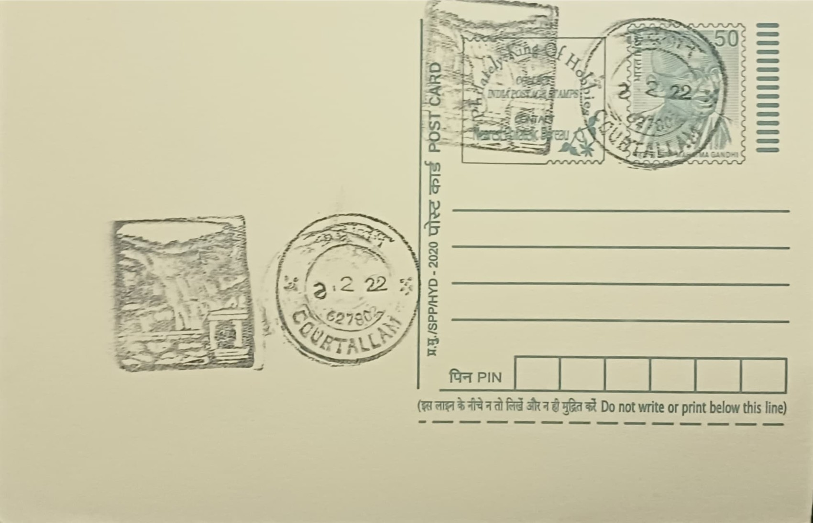

Courtallam Waterfalls
குற்றாலம் அருவிகள்


The name Courtallam, rendered in Tamil as Kuttralam, derives from Kuttralanathar, the form of Shiva enshrined at the site's ancient temple, with the falls taking their name from the deity rather than the reverse. Local legend holds that the sage Agastya, unable to witness the celestial marriage of Shiva and Parvathi, pleaded with Shiva at this spot in the Western Ghats; pleased by the sage's devotion, Shiva is said to have appeared before him and Lopamudra in wedding attire and made the place his abode. A related tradition credits Agastya with preparing a medicinal oil from cow's milk, tender coconut, and forty-two herbs and applying it to the deity, a story often cited as the origin of the falls' reputed healing properties.
Courtallam is counted among the Paadal Petra Sthalams, the 275 Shaivite shrines glorified in the hymns of the Tevaram, which places the Kuttralanathar temple and its surrounding falls within one of the oldest strata of organized Tamil Shaiva worship. Beyond its religious standing, the site is widely marketed as the 'Spa of South India' for the believed therapeutic value of its waters, which filter through Western Ghats forest tracts said to be dense with medicinal plants before reaching the cascades. This dual identity, pilgrimage centre and health resort, has made Courtallam one of Tamil Nadu's most visited natural attractions, drawing an estimated twenty-five lakh visitors annually, concentrated heavily in the monsoon months.
Epigraphic and literary references to the temple and falls date to the Chola and Pandya periods from around the tenth century CE, with the Pandya rulers based at nearby Tenkasi credited with expanding the temple complex, laying approach roads, and erecting mandapams that encouraged settlement and pilgrim traffic around the shrine. The falls themselves form a series fed by the Chittar river system descending the Western Ghats escarpment; sources commonly list nine distinct falls in the group, including Peraruvi (the Main Falls), Aintharuvi (Five Falls), Thenaruvi (Honey Falls), Chitraruvi, and Puli Aruvi (Tiger Falls). The Main Falls is generally cited at a drop of roughly sixty metres, while Five Falls splits into five separate streams after descending from a rock outcrop locally called Trincomalee.
Among the individual cascades, Aintharuvi, or Five Falls, is the most visited for therapeutic bathing, its water dividing into five channels that are believed to each carry a slightly different mineral or herbal character, while Thenaruvi, the Honey Falls, drops roughly forty metres between two large boulders and is popular with visitors seeking a less crowded bathing spot. The Old and New Courtallam falls, Pazhaya Aruvi and Puthu Aruvi, are smaller cascades a short distance from the main group, each carrying its own local associations, and together with Puli Aruvi and Chitraruvi they give the Courtallam falls complex its character as a cluster rather than a single waterfall. The heaviest and most photographed flow occurs during the South West Monsoon from June to September, when the volume of water increases markedly and the falls draw their largest crowds.
Tenkasi district authorities have in recent years carried out infrastructure works, reported at around Rs 11.5 crore, to add modern toilets, food courts, and visitor facilities at the Main Falls, Five Falls, Tiger Falls, and Small Falls, alongside periodic district collector inspections ahead of each tourist season to assess crowd management and safety arrangements, particularly given the weekend traffic congestion the falls routinely draw along the Main Courtallam Road. The falls are closed to bathers during periods of flood-level flow for safety reasons and reopened once water levels stabilise, a cycle that recurs most years during the peak monsoon weeks. Courtallam today functions as both an active Shaiva pilgrimage destination and a seasonal health resort administered jointly by temple authorities and the Tenkasi district administration, drawing visitors from across South India for the waters as much as for worship.
| Date of Introduction | August 1, 1977 |
|---|---|
| Address | Sub Postmaster, |
| Courtallam SO, | |
| Tenkasi (dt.), Tamil Nadu - 627802. |